League of Legends é um jogo eletrônico do gênero multiplayer online battle arena (MOBA) no qual o jogador, de uma perspectiva isométrica, controla um personagem (denominado "campeão") com um conjunto de habilidades únicas. No decorrer de uma partida,
os campeões ganham níveis acumulando pontos de experiência (XP) ao matar inimigos. Itens podem ser adquiridos para aumentar a força dos campeões,e são comprados com ouro, que os jogadores acumulam passivamente ao longo do tempo e ganham ativamente derrotando minions, campeões ou
estruturas defensivas do time adversário. No modo de jogo principal, Summoner's Rift, os itens são comprados por meio de uma loja, disponível para os jogadores apenas quando seu campeão está na base de sua equipe. Cada combinação é descontínua; níveis e itens não são transferidos
de uma partida para outra.
Summoner's Rift é o principal modo de jogo de League of Legends e o mais proeminente a nível profissional. Ele possui um modo ranqueado competitivo, onde um sistema de matchmaking determina o nível de habilidade de um jogador e gera uma
classificação inicial a partir da qual ele pode subir. Existem dez níveis, conhecidos como "elos"; os mais baixos são Ferro, Bronze e Prata, e os mais altos são Mestre, Grão-Mestre e Desafiante.
Duas equipes de cinco jogadores competem para destruir o "Nexus" do time adversário — uma grande estrutura que é protegida pelos campeões oponentes e por fortificações conhecidas como "torres". O Nexus de cada equipe está localizado em sua
base — local onde os jogadores começam uma partida ou reaparecem após a morte. Personagens não jogáveis (NPCs), conhecidos como "minions", são gerados a partir do Nexus de cada equipe e avançam em direção à base inimiga ao longo de três rotas protegidas por torres: topo,
meio e inferior. A base de cada equipe contém três "inibidores", um atrás da terceira torre do centro de cada rota. Destruir um dos inibidores da equipe inimiga faz com que minions aliados mais fortes surjam naquela rota e permite que a equipe de ataque possa danificar as
duas últimas torres que protegem o Nexus inimigo, além do próprio Nexus caso as últimas torres sejam destruídas. As regiões entre as rotas, conhecidas coletivamente como "selvas", são habitadas por "monstros" que, de modo semelhante aos minions, reaparecem em intervalos regulares.
Assim como os minions, os monstros fornecem ouro e XP quando são mortos. Outra classe de monstro mais poderosa reside dentro do rio que separa a selva de cada time. Como esses monstros concedem habilidades especiais ao time que os derrotarem, eles geralmente requerem vários jogadores
para serem abatido. Por exemplo, uma equipe pode ganhar uma unidade aliada poderosa após matar o Arauto do Vale; aumentos de força permanentes matando dragões, e minions mais fortes e duradouros matando o Barão Na'Shor.
Rotas e Lanes
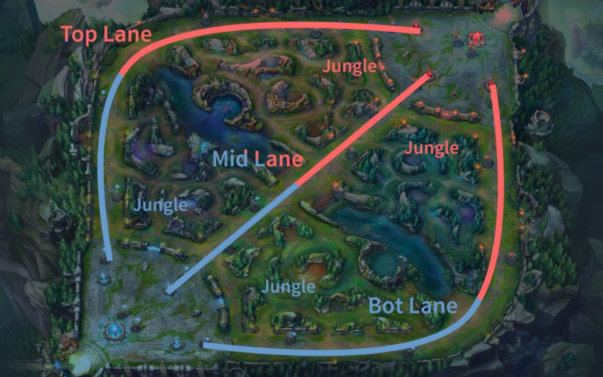
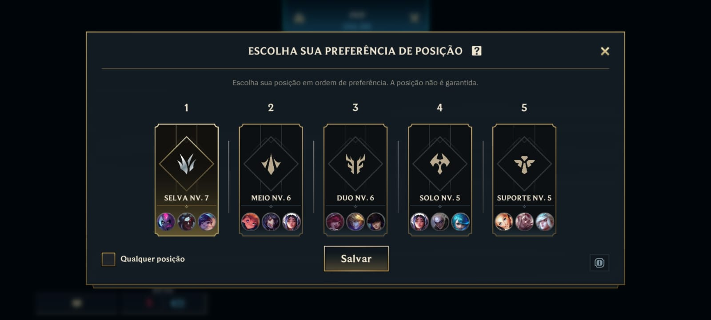
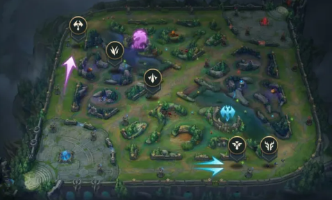
Basicamente, as lanes são os corredores onde passam os minions de cada equipe e onde ficam as torres de proteção.
Existem 4 lanes no principal mapa do jogo, chamado Summoner’s Rift: a superior (top), a central (mid), a inferior (bot) e a selva (jungle),
que fica entre as outras três lanes.
Top Lane (Rota Superior):
A top lane é conhecida por ser uma ilha, devido ao isolamento em relação ao resto do mapa durante grande parte do jogo
inicial. É tradicionalmente ocupada por campeões tanques ou lutadores, devido à sua proximidade com o Barão Nashor e a importância de sustentabilidade
e duelo 1v1.
Jogadores nesta rota devem ter boa noção de controle de onda de minions, visão para evitar ganks e habilidade em duelos prolongados.
Na top lane normalmente se utilizam campeões tanques (que aguentam tomar muito dano pela equipe), como Ornn, Malphite e Shen, e
lutadores (que trabalham com um misto entre aguentar dano e causá-lo), como Renekton, Sett e Aatrox. É também nessa role que boa parte dos campeões de split
push (estratégia da qual um campeão impõe pressão em uma rota sozinho enquanto o resto do time atua de outras formas no mapa) como Fiora, Camille e Jax
atuam.
Split Push: É uma estratégia que literalmente irá separar os membros da equipe durante movimentações ofensivas.
Nesse tipo de composição, um campeão é escolhido para fazer pressão em determinado ponto do mapa enquanto o resto do time se desloca para conquistar objetivos
como Dragões, Barões, torres e inibidores.
/
Tanques
/
Lutadores
/
Split Push
/
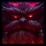
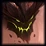
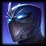
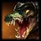
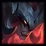
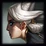
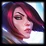
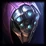
Jungle (Selva)
O jungler tem um papel único, não se limitando a uma rota fixa, mas sim percorrendo a selva, coletando recursos, auxiliando
as rotas através de ganks e controlando os objetivos do mapa.
Requer um bom entendimento de timing, visão estratégica para controlar e prever movimentos do jungler adversário,
e flexibilidade para apoiar o time onde mais precisa.
A selva abriga uma boa variedade de campeões. Alguns são focados em ajudar o time e impactar as rotas desde o início do jogo ou "Early Game",
como Elise, Lee Sin e Nunu & Willump. Outros como Viego, Graves e Karthus precisam de tempo e espaço para crescer no caso seria "Late Game", utilizando a pressão de
suas rotas para se beneficiar.
/
Early Game
/
Late Game
/
Assassinos
/
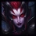
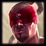
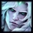
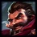
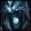
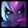
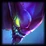
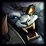
Mid Lane (Rota do Meio)
A mid lane é a alma do mapa, oferecendo acesso rápido a todas as outras áreas, o que a torna crucial para o controle
do jogo. Magos e assassinos geralmente dominam esta rota, buscando eliminar rapidamente oponentes e criar oportunidades de "roaming"
para auxiliar nas side lanes e objetivos.
Jogar na mid requer visão aguçada para evitar emboscadas e habilidade em combate rápido, aproveitando brechas para
abater o adversário ou apoiar o time.
Roaming: São os momentos cujo jogador de uma rota se movimenta em direção a outra para
distribuir vantagens no mapa.
/
Magos
/
Assassinos
/
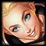
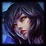
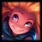
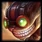
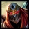
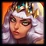
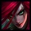
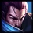
Bot Lane – ADC + Support (Rota Inferior)
Dividida entre o atirador (ADC) e o suporte, a bot lane é essencial para o controle do Dragão, um objetivo primordial
no início ao meio do jogo. O ADC foca em farmar e escalar para o late game, enquanto o suporte protege, controla visão com Wards e tenta garantir
vantagens através de pressão e abates.
A sinergia entre os jogadores e a comunicação são fundamentais, com ênfase em jogo seguro e capitalização em erros
adversários.